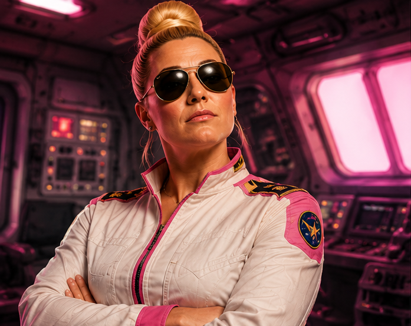
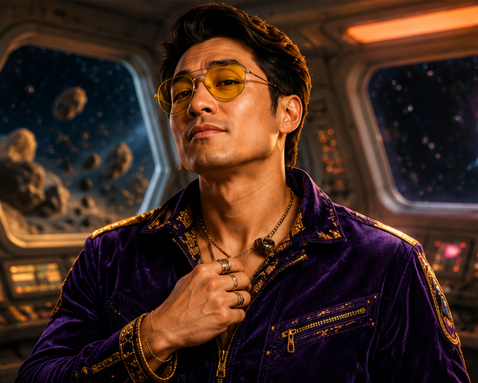
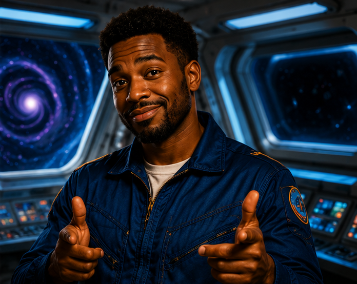

Astronauts

Chedda McSwagga is a veteran KSA astronaut known for her intense leadership style, razor-sharp focus, and extremely high standards. Since joining the KSA Class of 2021, she has completed multiple space missions and earned a reputation for staying calm during high-pressure situations. Younger astronauts often credit her tough mentorship for preparing them for life in space. As commander of the KMM Valdoria mission, McSwagga oversees the entire crew and firmly believes there is exactly one correct way to organize a spacecraft—and everyone else is probably doing it wrong.

Par Mesan is one of the KSA’s newest astronauts and quickly earned a reputation as an exceptionally talented pilot with remarkable reflexes under pressure. After joining the KSA Class of 2023, he completed his first orbital mission and proved himself during advanced flight and EVA operations. While fellow crew members trust his precision flying completely, they also know he refuses to start a mission without checking his horoscope and texting his mom first. Known for his dramatic personality and collection of vintage velvet flight suits, Mesan brings both skill and flair to the KMM Valdoria lunar mission.

Sek SivAan is a veteran KSA astronaut and systems engineer known for his brilliant technical skills and nonstop dad jokes. Originally from rival nation, Hazelia, SivAan joined the KSA Class of 2019 and quickly became one of the agency’s top experts in spacecraft systems, orbital mechanics, and diagnostics. He has completed multiple missions and EVAs, earning a reputation for solving complicated problems while somehow also making fart noises over the comms channel. Even with his goofy sense of humor, he has worked hard to gain the trust of the crew as he keeps critical systems running during Kacentina’s return to the Moon.

Colby Lore is a KSA Mission Specialist known for staying calm under pressure and keeping crew morale high during long missions. Since joining the KSA Class of 2022, she has completed multiple space missions and supported scientific operations and station maintenance during several EVAs. Her teammates trust her quick thinking and ability to handle stressful situations, but she’s also famous for telling wild stories that may or may not be completely made up. Whether managing onboard systems or describing the time she allegedly got trapped in a revolving door with a mime, Lore keeps the crew focused, entertained, and ready for the KMM Valdoria mission.